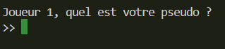
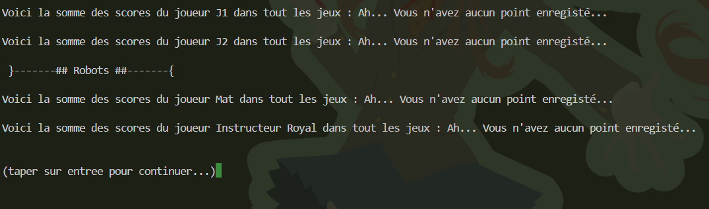
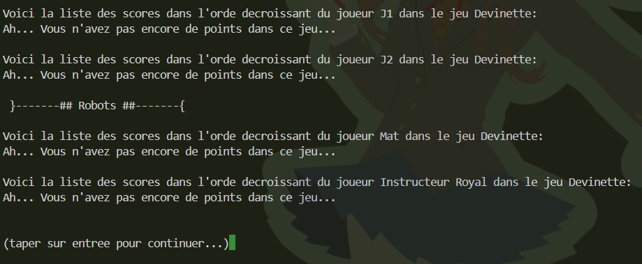
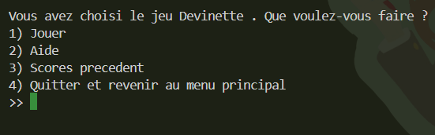
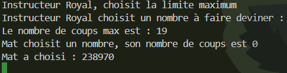
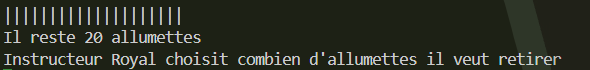
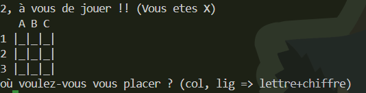
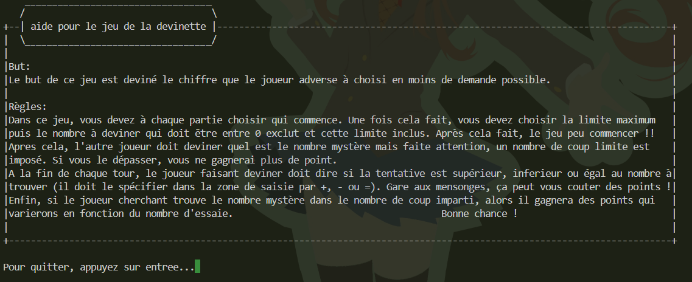
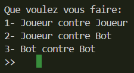

Projet : Mini‑Jeux Python

Contexte du projet
Projet réalisé dans le cadre d’une SAE de 1ère année du BUT Informatique. Objectif : développer une application Python en terminal regroupant plusieurs mini‑jeux, avec gestion des joueurs, des scores et de la persistance des données.
Objectifs
- Créer un système de connexion avec sauvegarde des joueurs.
- Développer trois mini‑jeux jouables en terminal.
- Mettre en place un menu principal clair et interactif.
- Gérer les scores globaux et par jeu.
- Implémenter des bots pour jouer contre l’ordinateur.
- Créer des fichiers d’aide pour expliquer les règles.
Mon rôle dans le projet
En binôme, j’ai principalement travaillé sur :
- la gestion des joueurs (création, connexion, stockage dans
joueurs.txt) ; - le menu principal et la navigation entre les jeux ;
- l’affichage des scores globaux et des scores par jeu ;
- l’implémentation du jeu des devinettes ;
- la création des fichiers d’aide ;
- la gestion des bots (mode joueur vs bot).
Fonctionnalités principales
Gestion des joueurs
Création de compte, connexion, persistance des données :

Menu principal
Choix du jeu, consultation des scores :

Scores
Scores totaux :

Scores par jeu :

Les trois mini‑jeux
-
Jeu des devinettes — deviner un nombre aléatoire.


-
Jeu des allumettes — éviter de prendre la dernière allumette.

-
Jeu du morpion — aligner trois symboles.

Aide intégrée
Chaque jeu possède un fichier d’aide :

Mode Joueur vs Bot
Choix du mode :

Livrables
- Application Python complète
- Gestion des joueurs et des scores
- Trois mini‑jeux fonctionnels
- Fichiers d’aide
- Code commenté
- Lien GitHub du projet
Compétences du BUT démontrées
- C1 – Développement d’application : Python, modularité, gestion de fichiers.
- C2 – Optimisation : logique algorithmique, bots, gestion des essais.
- C5 – Conduite de projet : organisation en binôme.
- C6 – Collaboration : communication, versioning.
Apprentissages Critiques (AC) démontrés
- AC11 — Implémenter des conceptions simples (mini‑jeux modulaires).
- AC13 — Faire des essais et analyser les résultats (tests des jeux).
- AC21 — Choisir des structures de données adaptées (scores, joueurs).
- AC22 — Utiliser des algorithmes adaptés (bots, logique des jeux).
- AC51 — Organiser un projet (répartition des tâches).
- AC61 — Utiliser des outils collaboratifs.
- AC63 — Participer à un travail collectif.
Analyse réflexive
Ce projet m’a permis de renforcer ma maîtrise de Python, la gestion des fichiers, la structuration en modules et la création d’interfaces textuelles claires. La difficulté principale a été la persistance des données et la navigation fluide entre les jeux. J’ai aussi appris à concevoir des bots simples et à rendre le code générique pour accueillir plusieurs jeux.